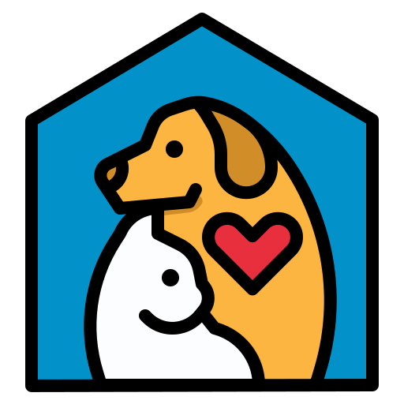

Rescatando patitas
No vamos a cambiar el mundo ayudando a un animal, pero al menos el mundo habrá cambiado para él.
Dueños
Acá vas a poder registrar a todas tus mascotas. Si alguna vez una se pierde, podes generar un aviso y de esa forma será más fácil encontrarla!